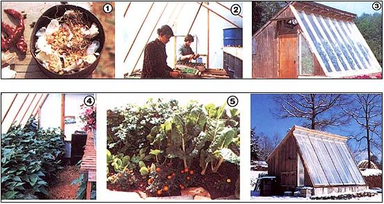

Our master gardeners share their secrets for getting the most out of indoor crop producing.
It's one (wonderful) thing to have a solar greenhouse . . . but it's quite another (not so easy) thing to know how best to use the facility. Invariably, as soon as you start an indoor garden, a multitude of questions will crop up: What can you do to keep aphids from spreading like white dust over your greenery? Which vegetables grow and yield best in such a space-tight and temperature-varying environment? And is there anything to do with the structure during the warm months besides using it to store gardening tools?
Well, there's no way we here at MOTHER can answer every question you may have about greenhouse growing ... because so much depends on your particular structure, your own climatic conditions, and your growing preferences. We can, though, share the insights of Barbara and Kerry Sullivan, the master gardeners who've successfully "solar greenhoused" for the past three years out at MOTHER's Ecological Research Center. And we'll bet a bed of February lettuce that you're bound to find some useful tips from their experience . . . ideas that-once you adapt them to your own situation-will be helpful to you wherever or whatever your indoor growing spot may be. So let's go (or should we say grow?) through a year in MOM's solar greenhouse with Barb and Kerry, beginning with . . .
FALL FUMIGATION
Before MOM's gardeners start their winter crop of greenhouse vegetables, they frequently give the building a preventive purification to ward off insect problems. Naturally, our holistic-minded growers don't zap the place with toxic pesticides. Instead, they give the plant house a cleansing fumigation with a concoction they learned about from Juliette de Bairach Levy's Herbal Handbook for Farm and Stable. (She recommends this treatment for clearing farm livestock buildings of parasites and pests.) To make the fumigant, Barbara and Kerry dry and powder equal parts of cayenne pepper . . . old garlic skins and stems . . . and cow or horse dung. The first two ingredients are the potent pest-discouragers of the mix (indeed, the Sullivans often make the blend "heavy on the pepper"), while the manure is used mainly to help the combination burn better. The gardeners remove any plants that may be in the greenhouse, set a tin pan containing the mix either on a small portable gas stove or right above the firebox of their building's backup heater, then close and seal the greenhouse (from the outside, of course!). It takes about one-quarter pound of the mix to fully gas their 12' X 16' structure. The fumigant smolders for about one and a half hours, but our growers leave the smoke trapped in the little building for several hours more.
And just how do they know whether the spicy fumes have done the job? To assess a treatment, our gardeners sometimes leave a plant or two in the greenhouse before they smoke it, so that most aphids, whiteflies, and other bugs will gather on that specimen. When the growers come back to check, they frequently find the plant flecked with lots of dead or convulsing insects. (If the bugs appear too lively, Barb and Kerry may repeat the treatment. In fact, they often give the house a second fumigation a week after the first one anyway . . . when any eggs left unscathed by the initial treatment have had a chance to hatch out.)
While herbal fumigation works fine in MOM's freestanding solar greenhouse, the Sullivans add a cautionary note for other growers: Don't use this method in an attached greenhouse unless you can definitely seal the fumes away from your home. "That smoke stinks!" warns Kerry. "It'll burn your eyes and your lungs."
WINTER GREENS
After the hothouse has been de-bugged, the gardeners mix two inches of compost into the 1'tall, 3'-wide, and 15'-long front planting bed (which, by the way, was initially doubledug to a depth of two feet) and then put in their winter crops . . . lettuce, chard, kale, and spinach. The Sullivans concentrate on leaf vegetables because those plants give the most yield for the least space. (Indeed, the rich greenhouse loam produces enough to keep four people stocked with fresh greens for a good part of the winter.) These crops are also cold-tolerant, so they can handle the near freezing temperatures that do reach the interior of the freestanding structure during the coldest winter nights. Kerry and Barbara always add a few marigolds around the bed borders to provide color and "lighten up" the space. They also over winter their tender perennial herbs-such as lemon grass, lemon verbena, rosemary, sweet bay tree, pineapple sage, aloe, and scented geraniums-on the less well-lit back shelves of the solarium.
SPRING STARTS
One of the most important functions of MOM's solar greenhouse is to start spring seedlings that will later be transplanted into the garden. The Sullivans usually sow such crops in stages over a period of months. But before they begin the first tray, they clear out all the plants already in the building by harvesting any remaining greens and moving the herbs into the couple's own residence. Then they give the structure a thorough fumigation (they always perform this spring "gassing", but often skip the fall treatment if it doesn't seem necessary). Afterward, they bring in some of their previously prepared homemade soil mix-a finely sifted medium containing six parts leaf mold, four parts topsoil, one part sharp sand, and one part mature compost-and ready up their seed flats.
This is the one time of year that our growers provide supplemental heat to the freestanding plant house. They use an old gas heater to keep the nighttime temperatures at 55°F (they also leave the heater's pilot light on during extremely chilly days), because those precious seedlings can't grow if their environment gets much colder than that. It takes one 100-pound cylinder of gas (about $22 worth) to keep the greenhouse heated from February to April.
Barb and Kerry also take other steps to nurture their tender seedlings . . . for example, they spray the plants on alternate weeks with a biodynamic root-growth preparation and another that enhances light absorption. Then, when the seedlings are well established and transferred to the cold frame for toughening up, the gardeners give them a further boost by watering them with comfrey or stinging nettle tea.
While you'll likely have your own favorite crops to start indoors and your own best times to start them, we thought you might glean some useful ideas from seeing the sowing sequence (based on an expected last frost date of April 30 here in western North Carolina) that our gardeners have used.
Last spring, Kerry and Barbara sowed their first garden starters in mid-February: onions ... leeks ... lettuce ... broccoli ... cauliflower . . . cabbage . . . celery . . . alpine strawberries . . . sweet and cayenne peppers . . . sweet potatoes . . . chrysanthemums. . . lobelia . . . Iceland poppies . . . and 16 other varieties of flowers.
Are you surprised that onions were on that list? Well, Kerry and Barbara started those bulbs early because the plants are daylight sensitive and do best if they mature around the summer solstice. What about peppers? They grow so darned slowly, you see, that the Sullivans have found that peppers need as long a head start on the summer as possible. Sweet potatoes? Our gardeners like to set all their potatoes indoors (in water, soil, or moist sand), remove the shoots that sprout up, and plant each one separately. And why, a few of you may ask, did they grow so many flowers? Well, aside from the practical reasons (flowers attract honeybees and other beneficial insects), the nonedibles are beautiful . . . and make the garden a more pleasing place to visit and to work in.
In mid-March, peas, carrots, spinach, kale, mustard, kohlrabi, turnips, and fava beans (a green manure crop for tomatoes) were started outdoors, and our growers began their second indoor sowing. This planting consisted of white potatoes, more mustard, lettuce, spinach, kale, broccoli, and cabbage . . . plus summer savory, marjoram, basil, nicotiana, Mexican marigold, sweet alyssum, rudbeckia, and 23 other kinds of flowers.
The third set of sowings took place during the first weeks of April (when parsley, dill, carrots, beets, radishes, parsnips, turnips, and green onions were sown directly into the garden) and included tomatoes . . . lettuce . . . kohlrabi . . . chard . . . celery . . . jicama . . . cucumber, watermelon, and cantaloupe (in pots) . . . basil . . . summer savory . . . marjoram . . . salvia . . . verbena . . . myosotis . . . cosmos . . . and nine other flower varieties.
A last batch of mid-May indoor sowings (by this time, some trays were set in the gardeners' large cold frame instead of in the greenhouse) consisted of cabbage, brussels sprouts-that's right, the fall crop of brussels sprouts-and lettuce. And if all that sounds like a heck o a lot of seed starting (particularly when you consider that the Sullivans started as many as eight varieties of some of those vegetables), it is! Barb and Kerry have over 75 home built seed flats, and in the peak of the plant-startin frenzy, they had all 75 in use at once!
And you thought you were busy last spring!
SUMMER BEANS
By early summer, of course, all those 1 crops and flowers end up in their appropriate ;., . places in the more than 100 double-dug bed, out at MOM's Eco-Village. But what becomes of the solar greenhouse then? Does it. like a schoolchild, get to go on vacation ever June?
No sir! Instead, the Sullivans add a couple of inches of compost to the greenhouse's soil and sow bush beans. This legume gives the bed extra nitrogen for the winter and the chance to grow a fruiting crop (thereby, as Kerry puts it, "exercising the soil"). And. since the high summer sun doesn't hit the winter-angled glass directly and the building is quite well ventilated, the greenhouse doesn't overheat . . . but actually stays a couple of degrees cooler than the surrounding outdoors.
The Sullivans manage to get two crops of beans from the summer greenhouse. Andguess what!-neither crop has ever been troubled by Mexican bean beetles. (Those pests just haven't learned how to dine indoors!) Meanwhile, the very back of the greenhouse, now a semi shaded space, is often used to root perennial herb cuttings. (Actually, this past year our growers raised tomatoes in the greenhouse's main bed to help keep up with the demand for the fruit from the Ec -Village's new natural foods restaurant. And those fruits thrived as well as the green beans normally do!)
YEAR-ROUND USE
So there you have it: a summary of one year in the life of MOTHER's greenhouse. And while we're sure you have your own tips for taking full advantage of a solar growing space (and we'd love to hear them!), we did think you'd like to hear ours. After all, if you're fortunate enough to have an indoor plant palace, you're bound to cherish it so much that you, too, will want to use it to its fullest!
|
 STAFF PHOTOS [1] All the ingredients for herbal fumigation. [2] Transplanting spring starts. [3] Sweet william embellished last summer's indoor tomato crop. [4] Most often, green beans are the inside hot-weather crop. [5] Winter's the season for growing chard, lettuce, and other greens (here bordered by marigolds [6] Snow and growing can go together. |
|
|